Open Trip Tektok Ciremai
Rp250.000 / orang
DP Rp50.000 per orang. Sudah termasuk simaksi, guide, trip leader, makan roti bakar, coffee break, buah, P3K, dokumentasi, sertifikat, ganci, dan stiker.
Guide & Porter · Gunung Ciremai via Palutungan
Pendakian yang aman, nyaman, dan berkesan ke atap Jawa Barat, dipandu guide lokal yang sudah menemani 500+ pendaki.
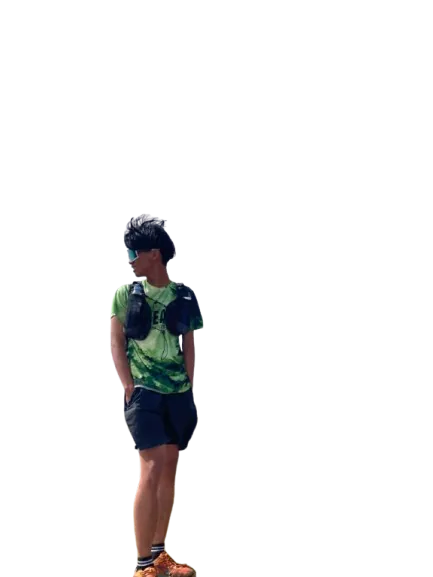
Tentang saya
Saya adalah guide lokal berpengalaman di Gunung Ciremai. Sudah lebih dari 2 tahun saya membantu ratusan pendaki menikmati keindahan Ciremai dengan aman, nyaman, dan berkesan.
Setiap pendakian adalah tanggung jawab saya, mulai dari persiapan, keselamatan di jalur, hingga kembali dengan selamat.
Dzikri Guide lokal Gunung Ciremai
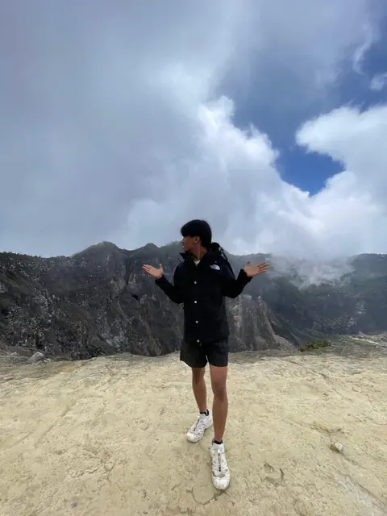
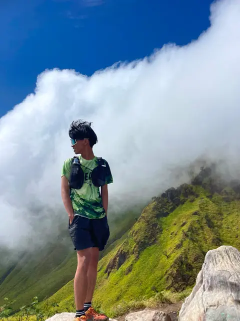
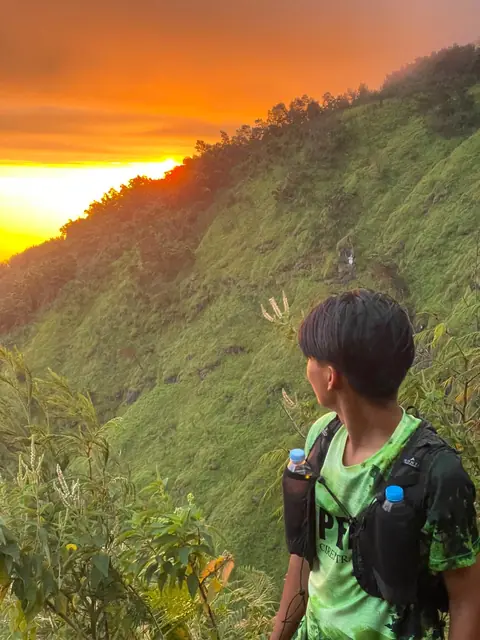
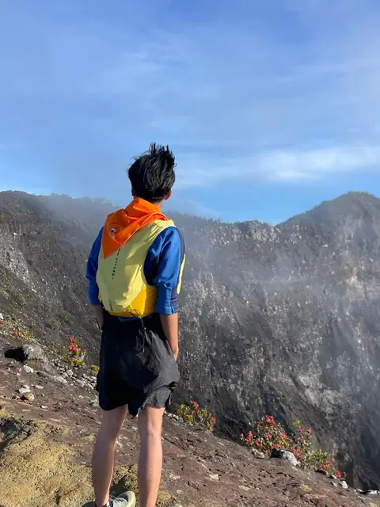
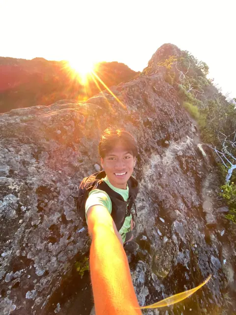
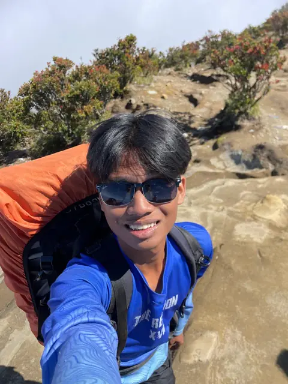
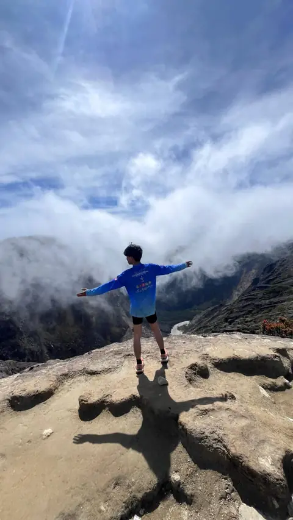
Layanan
Naik bareng teman baru di open trip, jadwal sendiri lewat private trip, atau cukup sewa porter agar bebanmu lebih ringan.
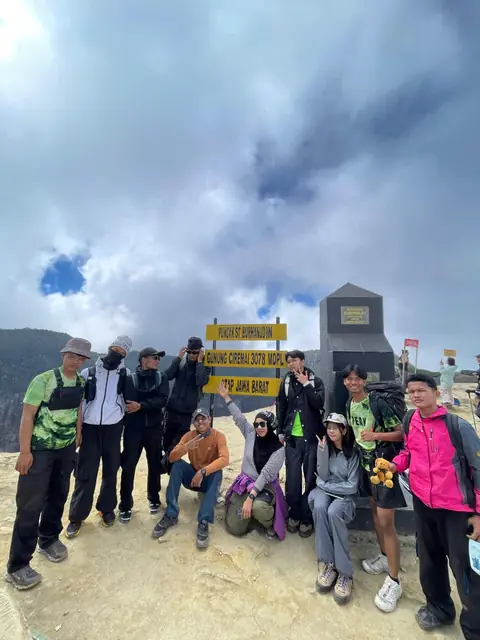
Rp250.000/orang · DP Rp50.000
Rp1.000.000/hari · guide + porter
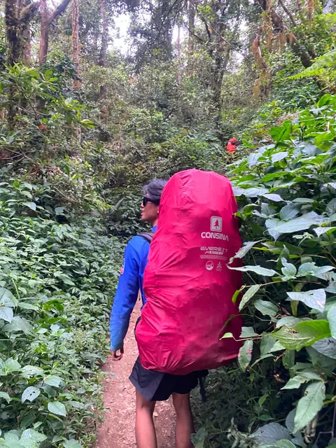
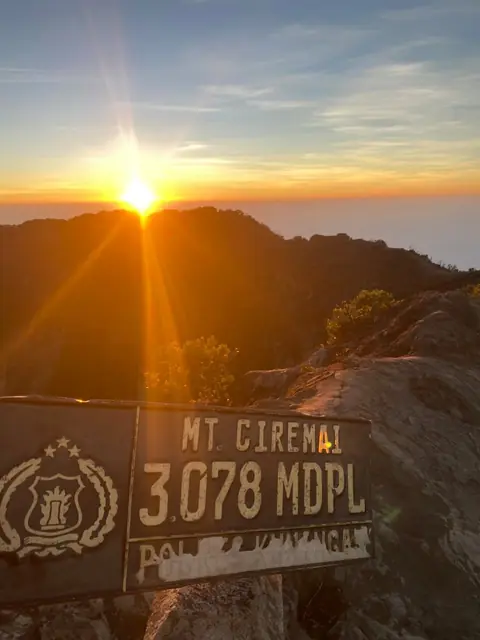
Jalur Palutungan
Open trip berangkat dari Basecamp Palutungan di Kuningan. Jalurnya panjang namun bertahap sehingga ramah untuk pemula, dan pemandangannya makin terbuka menjelang puncak.
Kenapa Dzikri
Hafal jalur, cuaca, dan ritme pendakian Ciremai.
Pace disesuaikan dengan kemampuan rombongan, termasuk pemula.
P3K dan oksigen selalu dibawa. Keselamatan di atas target puncak.
Foto dan video perjalananmu sudah termasuk paket.
Hitung sendiri estimasi biayamu sebelum chat.
Sleeping bag, trekking pole, dan makan sudah disiapkan.
Galeri
Harga & kalkulator
Semua harga terlihat di sini. Pilih paket, isi detail, lalu kirim rinciannya langsung ke WhatsApp Dzikri.
Rp250.000 / orang
DP Rp50.000 per orang. Sudah termasuk simaksi, guide, trip leader, makan roti bakar, coffee break, buah, P3K, dokumentasi, sertifikat, ganci, dan stiker.
| Wilayah | Porter | Guide + Porter |
|---|---|---|
| Jawa BaratCiremai, Papandayan | Rp800.000/hari | Rp1.000.000/hari |
| Jawa TengahPrau, Merbabu | Rp800.000/hari | Rp1.000.000/hari |
Ketersediaan tanggal dikonfirmasi langsung oleh Dzikri lewat WhatsApp. Pembayaran via transfer bank atau QRIS.
Paket trip
Isi paket untuk trip dengan camping. Isi paket open trip tektok tercantum di kartu harga.
Kata mereka
Pengalaman terbaik mendaki Gunung Ciremai bersama Dzikri. Guide ramah, profesional, dan sangat memperhatikan keselamatan. Recommend banget buat yang mau trip seru!
Private trip bareng Dzikri luar biasa! Jalur Palutungan indah banget, dan Dzikri sabar nemenin kami sampai puncak. Dokumentasinya juga keren banget!
Pertama kali naik gunung langsung ke Ciremai bareng Dzikri. Awalnya deg-degan, tapi guide-nya tenang dan bikin percaya diri. Pasti balik lagi!
Porter service-nya sangat membantu! Logistik beres, jalur aman, dan Dzikri selalu pastiin semua anggota tim tiba dengan selamat. Top markotop!
“Setiap langkah adalah cerita, setiap puncak adalah rasa syukur.”
Dzikri
FAQ
Tentu bisa! Gunung Ciremai via jalur Palutungan cocok untuk pendaki pemula hingga berpengalaman. Pace akan disesuaikan dan ada briefing lengkap sebelum keberangkatan.
Perlengkapan pribadi: baju ganti, jas hujan, pakaian hangat, sepatu trekking, headlamp, dan obat-obatan pribadi. Sleeping bag, trekking pole, dan logistik sudah termasuk dalam paket.
Open trip cukup DP Rp50.000 per orang untuk mengamankan slot. Private trip DP 30% dari total, sisanya dilunasi di basecamp. Pembayaran via transfer bank atau QRIS.
Keselamatan adalah prioritas utama. Jika cuaca tidak memungkinkan, trip dijadwalkan ulang tanpa biaya tambahan.
Untuk open trip, booking minimal H-3. Untuk private trip, disarankan minimal 1 minggu sebelumnya.
Booking sekarang dan jadwalkan petualanganmu. Fast respon via WhatsApp.
Booking Sekarang